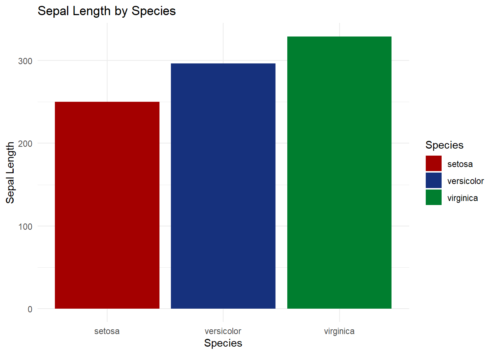

3 R语言配色教程
##
## bruceR (v2024.6)
## Broadly Useful Convenient and Efficient R functions
##
## Packages also loaded:
## ✔ data.table ✔ emmeans
## ✔ dplyr ✔ lmerTest
## ✔ tidyr ✔ effectsize
## ✔ stringr ✔ performance
## ✔ ggplot2 ✔ interactions
##
## Main functions of `bruceR`:
## cc() Describe() TTEST()
## add() Freq() MANOVA()
## .mean() Corr() EMMEANS()
## set.wd() Alpha() PROCESS()
## import() EFA() model_summary()
## print_table() CFA() lavaan_summary()
##
## For full functionality, please install all dependencies:
## install.packages("bruceR", dep=TRUE)
##
## Online documentation:
## https://psychbruce.github.io/bruceR
##
## To use this package in publications, please cite:
## Bao, H.-W.-S. (2024). bruceR: Broadly useful convenient and efficient R functions (Version 2024.6) [Computer software]. https://CRAN.R-project.org/package=bruceR##
## These packages are dependencies of `bruceR` but not installed:
## - pacman, ggtext, see, vars, phia, BayesFactor, GPArotation
##
## ***** Install all dependencies *****
## install.packages("bruceR", dep=TRUE)## Sepal.Length Sepal.Width Petal.Length Petal.Width Species
## 1 5.1 3.5 1.4 0.2 setosa
## 2 4.9 3.0 1.4 0.2 setosa
## 3 4.7 3.2 1.3 0.2 setosa
## 4 4.6 3.1 1.5 0.2 setosa
## 5 5.0 3.6 1.4 0.2 setosa
## 6 5.4 3.9 1.7 0.4 setosa
## 7 4.6 3.4 1.4 0.3 setosa
## 8 5.0 3.4 1.5 0.2 setosa
## 9 4.4 2.9 1.4 0.2 setosa
## 10 4.9 3.1 1.5 0.1 setosa

3.4 查看配色盘，选择3颜色，区分色
ggplot(iris, aes(x = Species, y = Sepal.Length, fill = Species)) +
geom_bar(stat = "identity") +
labs(title = "Sepal Length by Species", x = "Species", y = "Sepal Length") +
theme_minimal()+
scale_fill_manual(values = met.brewer("Austria"))
ggplot(iris, aes(x = Species, y = Sepal.Length, fill = Species)) +
geom_bar(stat = "identity") +
labs(title = "Sepal Length by Species", x = "Species", y = "Sepal Length") +
theme_minimal()+
scale_fill_manual(values = met.brewer("Degas"))